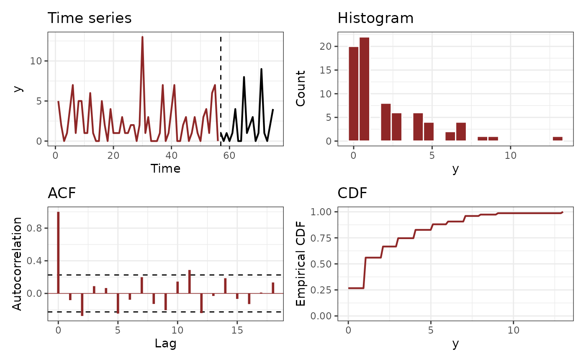
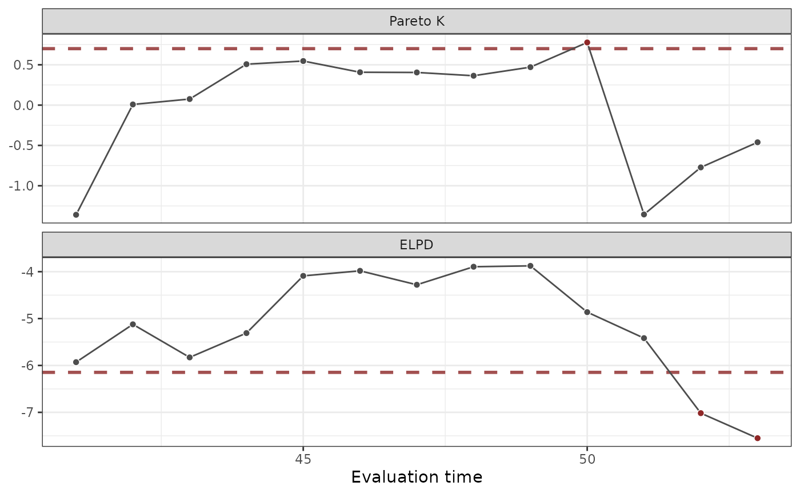

Approximate leave-future-out cross-validation of fitted mvgam objects
Source:R/lfo_cv.mvgam.R
lfo_cv.mvgam.RdApproximate leave-future-out cross-validation of fitted mvgam objects
Usage
lfo_cv(object, ...)
# S3 method for mvgam
lfo_cv(
object,
data,
min_t,
fc_horizon = 1,
pareto_k_threshold = 0.7,
silent = 1,
...
)Arguments
- object
listobject of classmvgam. Seemvgam()- ...
Ignored
- data
A
dataframeorlistcontaining the model response variable and covariates required by the GAMformula. Should include columns: 'series' (character or factor index of the series IDs) 'time' (numeric index of the time point for each observation). Any other variables to be included in the linear predictor offormulamust also be present- min_t
Integer specifying the minimum training time required before making predictions from the data. Default is either the
30th timepoint in the observational data, or whatever training time allows for at least10lfo-cv calculations, if possible. This value is essentially arbitrary so it is highly recommended to change it to something that is more suitable to the data and models being evaluated.- fc_horizon
Integer specifying the number of time steps ahead for evaluating forecasts
- pareto_k_threshold
Proportion specifying the threshold over which the Pareto shape parameter is considered unstable, triggering a model refit. Default is
0.7- silent
Verbosity level between
0and2. If1(the default), most of the informational messages of compiler and sampler are suppressed. If2, even more messages are suppressed. The actual sampling progress is still printed. Setrefresh = 0to turn this off as well. If usingbackend = "rstan"you can also set open_progress = FALSE to prevent opening additional progress bars.
Value
A list of class mvgam_lfo containing the approximate ELPD scores,
the Pareto-k shape values and 'the specified pareto_k_threshold
Details
Approximate leave-future-out cross-validation uses an expanding training window scheme
to evaluate a model on its forecasting ability. The steps used in this function mirror those laid out
in the lfo vignette from the loo package,
written by Paul Bürkner, Jonah Gabry, Aki Vehtari. First, we refit the model using the first min_t
observations to perform a single exact fc_horizon-ahead forecast step. This forecast is evaluated against
the min_t + fc_horizon out of sample observations using the Expected Log Predictive Density (ELPD).
Next, we approximate each successive round of
expanding window forecasts by moving forward one step at a time for i in 1:N_evaluations and re-weighting
draws from the model's posterior predictive distribution using Pareto Smoothed
Importance Sampling (PSIS). In each iteration i, PSIS weights are obtained for the next observation
that would have been included in the model if we had re-fit (i.e. the last observation that would have
been in the training data, or min_t + i). If these importance ratios are stable, we consider the
approximation adequate and use the re-weighted posterior's forecast for evaluating the next holdout
set of testing observations ((min_t + i + 1):(min_t + i + fc_horizon)). At some point the
importance ratio variability will become too large and importance sampling will fail. This is
indicated by the estimated shape parameter k of the generalized Pareto distribution
crossing a certain threshold pareto_k_threshold. Only then do we refit the model using
all of the observations up to the time of the failure. We then restart the process and iterate forward
until the next refit is triggered (Bürkner et al. 2020).
References
Paul-Christian Bürkner, Jonah Gabry & Aki Vehtari (2020). Approximate leave-future-out cross-validation for Bayesian time series models Journal of Statistical Computation and Simulation. 90:14, 2499-2523.
Examples
# \donttest{
# Simulate from a Poisson-AR2 model with a seasonal smooth
set.seed(100)
dat <- sim_mvgam(T = 75,
n_series = 1,
prop_trend = 0.75,
trend_model = 'AR2',
family = poisson())
# Plot the time series
plot_mvgam_series(data = dat$data_train,
newdata = dat$data_test,
series = 1)

# Fit an appropriate model
mod_ar2 <- mvgam(y ~ s(season, bs = 'cc', k = 6),
trend_model = AR(p = 2),
family = poisson(),
data = dat$data_train,
newdata = dat$data_test,
chains = 2,
silent = 2)
# Fit a less appropriate model
mod_rw <- mvgam(y ~ s(season, bs = 'cc', k = 6),
trend_model = RW(),
family = poisson(),
data = dat$data_train,
newdata = dat$data_test,
chains = 2,
silent = 2)
# Compare Discrete Ranked Probability Scores for the testing period
fc_ar2 <- forecast(mod_ar2)
fc_rw <- forecast(mod_rw)
score_ar2 <- score(fc_ar2, score = 'drps')
score_rw <- score(fc_rw, score = 'drps')
sum(score_ar2$series_1$score)
#> [1] 22.9077
sum(score_rw$series_1$score)
#> [1] 61.5392
# Now use approximate leave-future-out CV to compare
# rolling forecasts; start at time point 40 to reduce
# computational time and to ensure enough data is available
# for estimating model parameters
lfo_ar2 <- lfo_cv(mod_ar2,
min_t = 40,
fc_horizon = 3,
silent = 2)
lfo_rw <- lfo_cv(mod_rw,
min_t = 40,
fc_horizon = 3,
silent = 2)
# Plot Pareto-K values and ELPD estimates
plot(lfo_ar2)

plot(lfo_rw)
# Proportion of timepoints in which AR2 model gives better forecasts
length(which((lfo_ar2$elpds - lfo_rw$elpds) > 0)) /
length(lfo_ar2$elpds)
#> [1] 0.9230769
# A higher total ELPD is preferred
lfo_ar2$sum_ELPD
#> [1] -76.25362
lfo_rw$sum_ELPD
#> [1] -95.04612
# }